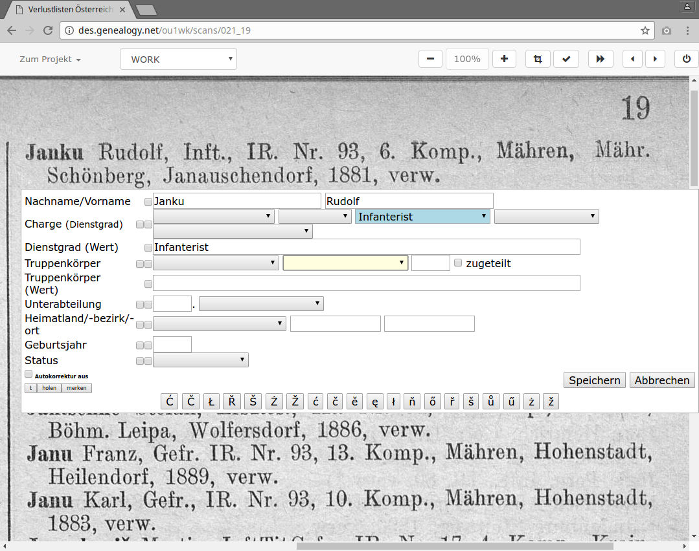

Verlustliste Österreich-Ungarn im DES
Die ersten drei Einträge
Jesper Zedlitz (Verein für Computergenealogie)
Nachdem Sie
http://des.genealogy.net/wk1ou/start/edit
angesteuert und sich angemeldet haben, wird ein
Bild ähnlich wie dieses erscheinen...

Der Scan erscheint. Wir positionieren den Mauszeiger auf die obere linke Ecke des ersten Eintrags...

und klicken beherzt mit der linken Maustaste.

Es öffnet sich das Erfassungsfenster.
Keine Angst, wenn es auf ersten Blick etwas unübersichtlich aussieht, wir arbeiten uns Stück für Stück vor.

Wir fangen an zu tippen, zunächst der Nachname.
Es können alle Buchstaben klein eingegeben werden, das Programm wird
die Groß- und Kleinschreibung automatisch korrigieren.
Mit der Tab-Taste wechselt man in das nächste Feld und gibt den Vornamen ein. Nun kommt der Dienstgrad dran. Dazu 3-mal die Tab-Taste drücken und man landet im blauen Feld.

Hier reicht ein Druck auf die Taste 'I' und “Infanterist” ist eingegeben. Das “IR” bezeichnet den Truppenkörper. 4x Tab bringt uns ins gelbe Eingabefeld.

Auch hier reicht ein Druck auf die Taste 'I'. So arbeiten wir uns nach und nach durch alle Felder. Nun noch auf Speichern klicken oder nach dem Status Tab und Enter drücken.

Glückwunsch, der erste Eintrag ist gespeichert!
Der grüne Balken zeigt uns an, dass dieser Eintrag bearbeitet wurde.
Der zweite und dritte Eintrag
Nach diesem Erfolg wollen wir gleich mit dem zweiten und dritten Eintrag weitermachen.
Dabei werden wir auch eine Komfortfunktion und eine Tastenkombination des DES kennenlernen.

Nun kommt der zweite Eintrag. Dazu wieder oben links auf den Eintrag klicken.

Es öffnet sich wieder das Erfassungsfenster. Da unser letzter Eintrag ein doppelzeiliger war, öffnet hier das Erfassungsfenster etwas zu weit unten, das macht aber nichts.
Wir füllen den Eintrag wie gewohnt aus. Vor dem Speichern warten wir aber noch kurz...

... und setzen das Häkchen vor “verwundet”. Das ist eine Komfortfunktion von DES. Sie sorgt dafür, dass der Wert “verwundet” für den nächsten Eintrag gemerkt wird. Nun können wir speichern.

Hier ist bereits die Eingabemaske für den dritten Eintrag. Wie versprochen wurde der Status “verwundet” gemerkt.

Wir geben die (wenigen) Daten des dritten Eintrags ein. Bei der Truppe reicht bereits “FJ” zur Auswahl. Nach der Zahl 29 können wir zum Speichern Alt+s drücken und sich fertig. Ein Klick auf “Speichern” geht natürlich auch.

Und schon ist auch der dritte Eintrag fertig!
Das war gar nicht so schwer, oder?
Nun viel Spaß bei der weiteren Erfassung.
Bei Fragen helfen die Projektbetreuer gerne weiter. Es gibt auch eine Mailingliste, auf der man Fragen stellen kann: